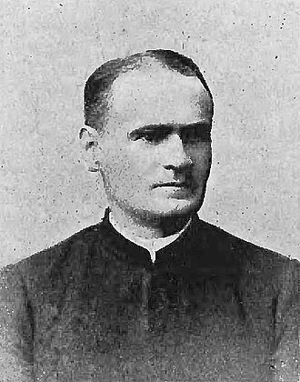

Уродженець Липівки — священник, громадський і політичний діяч

16 лютого 1856 — 21 лютого 1938
Народився 16 лютого 1856 року в с. Ляцьке Шляхетське (сучасна Липівка) Тисменицького повіту в сім'ї о. Петра (1822-1894) і Франциски з Лопатинських.
Закінчив цісарсько-королівську гімназію у Станиславові. Вивчав богослов'я у Львові в семінарії та на богословському факультеті університету. У 1881 році висвячений на одруженого священника (дружина з роду Шепаровичів – Емілія Шепарович; тесть був парохом в селі Олеша, Товмацького повіту; сучасний прикарпатський поет Богдан Гасюк походить з роду Шепаровичів-Кузмів), та, однак через рік став удівцем. Спочатку працював на Станиславівщині в селах: Колодіївка (сотрудник 1882-1884), Кулачківці (адміністратор 1886-1887), П'ядики (1887-1892), Топорівці (1892-1893), Балинці (1893-1909). У 1909 році переведений до клиру Львівської архиєпархії.
Церковні посади: митрат, кустос Львівської греко-католицької капітули, довголітній адміністратор митрополичих дібр. У 1929 році обраний членом історично-правничої секції Богословського наукового товариства у Львові. Почесний доктор економічних наук Української Господарської Академії у Подебрадах.
Посол до віденського парламенту від Української національно-демократичної партії (1907-1911) у 56-му двомандатному виборчому окрузі (сільські громади судових повітів Печеніжин, Коломия, Жаб'є, Кути, Косів, Яблунів, Заболотів, Гвіздець і Отинія). На виборах випередив кандидата-москвофіла Володимира Дудикевича. Його заступником обрали радикала Павла Лаврука, але о. Войнаровський волів бачити ним д-ра Олександра Кульчицького – директора товариства «Покупський Союз» у Коломиї.
Засновник парцеляційного товариства «Земля» (1908) і Земельного Гіпотечного Банку. Визначний діяч товариства «Сільський Господар» у Львові: заступник голови у 1918-1921 роках, голова товариства в 1929-1936. Заступник голови Львівської Хліборобської Палати (1934-1936).
Завдяки заходам Войнаровського між українськими селянами розпарцельовано близько 40 000 морґів землі дідичів. Багато зробив для організації фахової сільськогосподарської освіти для українського селянства.
Помер у Львові 21 лютого 1938 року і був похований у гробниці галицьких митрополитів і крилошан на Личаківському цвинтарі.
Назад до "Цікаво знати"